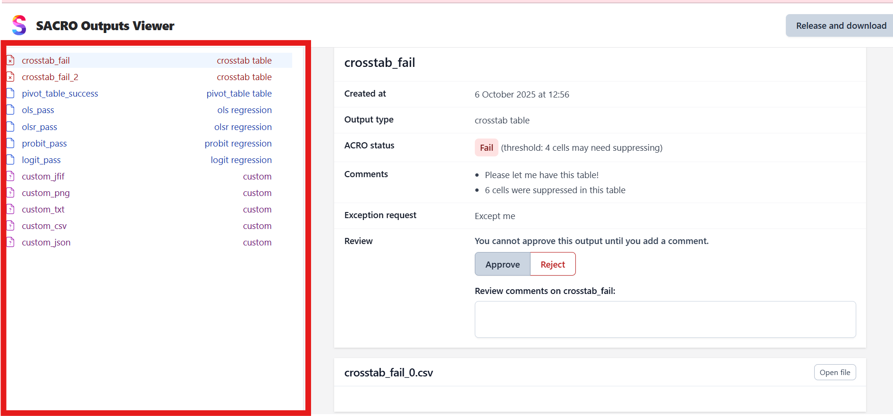
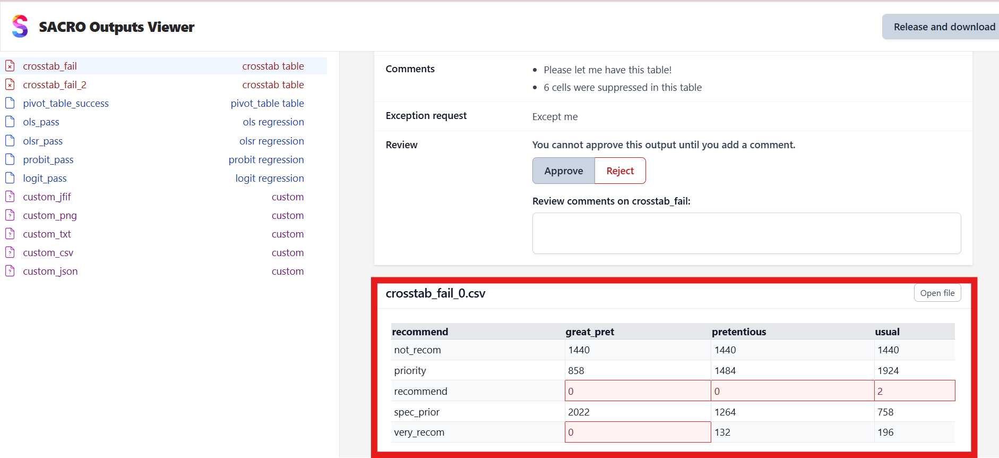
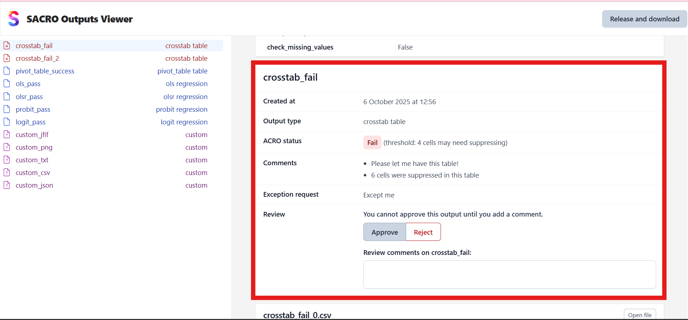
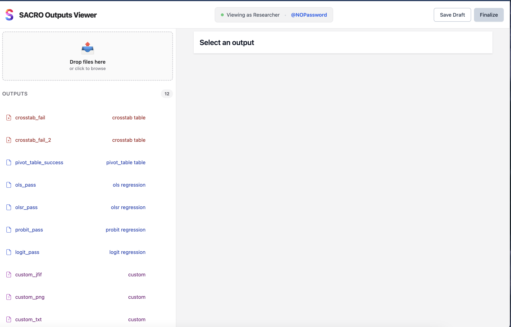
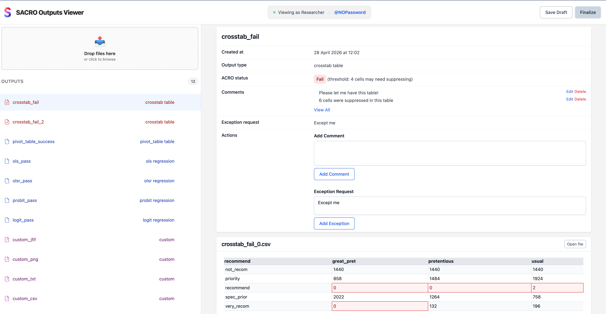
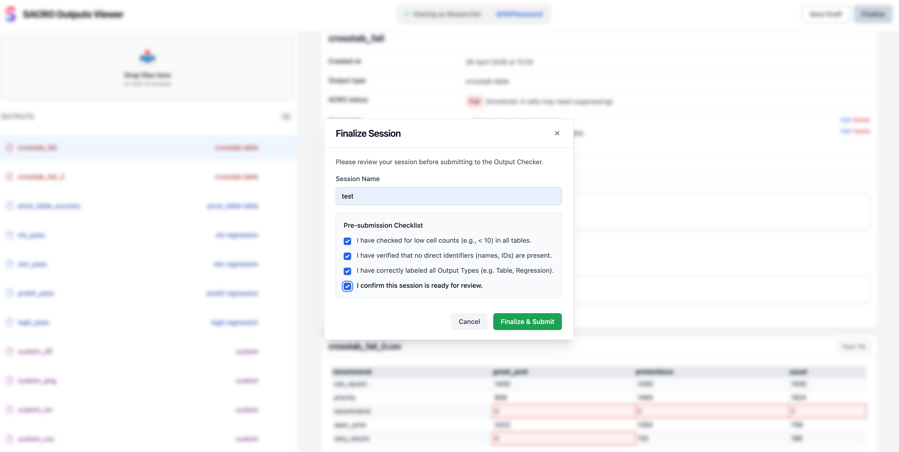

User Guide#
This guide explains how to use SACRO Viewer to review research outputs and manage the approval process for secure release.
Getting Started#
When you launch SACRO Viewer, you’ll be prompted to select a directory containing the outputs you wish to review. The application will automatically detect ACRO metadata and display the outputs for review.
Selecting Output Directory
Launch SACRO Viewer
A file dialog will appear asking you to choose a directory
Navigate to and select the folder containing your research outputs
Click “Select Folder” to load the outputs
If the directory contains ACRO-generated metadata (typically outputs.json), the viewer will use this to display detailed information about each output. If no ACRO metadata is found, the viewer will automatically generate metadata for all files in the directory, treating them as “custom” outputs requiring review.
Main Interface#
SACRO Viewer provides two main workflows: one for researchers submitting outputs and one for output checkers reviewing submissions.
Output Checker Interface#
The output checker interface consists of three main areas:
{kind=link}

- Output List (Left Panel)
Shows all outputs in the selected directory with their names and types. Outputs are color-coded:
Red icons: Failed ACRO checks or outputs requiring attention
Blue icons: Passed ACRO checks or successful outputs
Gray icons: Custom outputs (non-ACRO files)
{kind=link}

- File Viewer (Bottom Right)
Displays the contents of the selected output file. Supports various formats:
CSV files: Displayed as formatted tables with cell highlighting
Images: PNG, JFIF, and other image formats shown inline
Text files: Plain text with syntax highlighting
JSON files: Formatted JSON with proper indentation
{kind=link}

- Review Panel (Top Right)
Contains all information needed for making approval decisions:
ACRO Status: Shows pass/fail status and any warnings
Comments: Researcher-provided comments and justifications
Exception Request: Any special requests from the researcher
Review Section: Your approval decision and comments
Researcher Interface#
The researcher interface allows researchers to submit outputs and manage the submission lifecycle:
{kind=link}

- Output List (Left Panel)
Shows all outputs submitted by the researcher with their names and types. Each output displays:
Output name: User-defined name for the submission
Output type: Classification of the output (e.g., regression, classification, crosstab)
Status indicator: Visual indication of the current review state
Action buttons: Options to edit, rename, or delete outputs
{kind=link}

- File Viewer (Bottom Right)
Displays the contents of the selected output file. Supports the same formats as the output checker view:
CSV files: Displayed as formatted tables
Images: PNG, JFIF, and other image formats shown inline
Text files: Plain text display
JSON files: Formatted JSON
- Output Details Panel (Top Right)
Contains all submission details and communication with output checkers:
Output metadata: Type, description, and other details
Comments section: Researcher notes and justifications for the output
Exception request: Special requests or justifications for release
Review feedback: Comments and decisions from output checkers
Action buttons: Save, finalize, and submit options
Making Review Decisions#
For each output, you need to make an approval decision based on the ACRO analysis, researcher comments, and file contents.
Review Process
Select an output from the left panel to view its details
Examine the ACRO status - this shows the automated privacy assessment
Read researcher comments to understand the context and any special circumstances
View the file contents to verify what is being requested for release
Make your decision using the Approve/Reject buttons
Add review comments explaining your decision (optional but recommended)
ACRO Status Indicators
Pass: ACRO determined the output is safe for release
Fail: ACRO identified potential disclosure risks (e.g., “threshold: 4 cells may need suppressing”)
Review: Manual review required due to uncertainty or special circumstances
Approval Guidelines
Approve outputs that pass ACRO checks and have valid researcher justifications
Reject outputs with clear disclosure risks or insufficient justification
Consider carefully outputs that failed ACRO checks but have researcher exception requests
Researcher Workflow#
Researchers use SACRO Viewer to submit outputs and manage the submission lifecycle.
Submitting Outputs
Launch SACRO Viewer and select the Researcher interface
Upload output files using the upload zone or drag-and-drop functionality
Name each output with a descriptive identifier
Specify output type (regression, classification, crosstab, table, plot, etc.)
Add comments explaining the output and its statistical significance
Submit exception requests if you believe a failed ACRO check should be overridden with justification
Finalizing Submissions
{kind=link}

Once all outputs are prepared:
Review all outputs to ensure accuracy and completeness
Add a session name to identify this submission batch
Verify all required fields are completed
Click “Finalize” to lock the submission
Submit to output checkers for review
Session Management
Save drafts: Save your work in progress without finalizing
Resume sessions: Return to previous draft submissions to make edits
File Types and Display#
SACRO Viewer handles various output file types commonly produced in research:
- Statistical Tables (CSV)
Displayed as formatted tables with proper column alignment
Cells flagged by ACRO for potential disclosure risks are highlighted
Cell coordinates are shown for reference in ACRO reports
- Images and Plots
PNG, JFIF, and other image formats displayed inline
Plots and charts can be viewed at full resolution
“Open file” button available for viewing in external applications
- Text and Code Files
Plain text files displayed with appropriate formatting
Code files shown with syntax highlighting where possible
Large files may be truncated for performance
- JSON and Metadata
JSON files displayed with proper formatting and indentation
ACRO metadata files show the complete analysis results
Nested structures are clearly presented
Completing the Review#
Once you have reviewed all outputs and made approval decisions, you can generate the final release package.
Release Process
Review all outputs - ensure every item has an approval decision
Click “Release and download” button (appears when all outputs are reviewed)
Add final comments about the overall review in the dialog that appears
Confirm the release to generate the approved outputs package
Release Package Contents
The generated ZIP file contains:
Approved output files - only files you approved for release
Release metadata - summary of approval decisions and comments
Audit information - reviewer details and timestamps
Checksums - file integrity verification data
Working with Different Output Types#
- ACRO-Generated Outputs
These outputs include metadata about statistical disclosure control checks, researcher comments, and automated risk assessments. Use this information to make informed decisions about release approval.
- Custom Outputs
Files without ACRO metadata are treated as custom outputs requiring manual review. These appear with generic metadata and require careful examination of file contents to assess disclosure risks.
- Mixed Directories
Directories containing both ACRO and non-ACRO outputs are handled seamlessly. The viewer will use ACRO metadata where available and generate custom metadata for other files.